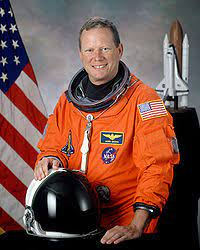
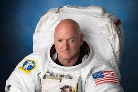
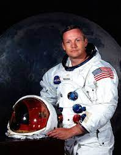

Astronauts
| Photo | Biography | Quote |
|---|---|---|
|  | Michael Fincke | "To fly in space is to see the reality of Earth, alone." |
|  | Nickolas Kavandi | "Exploration is wired into our brains. If we can see the horizon, we want to know what's beyond." |
 |
Anousheh Ansari | "Spacewalking is the best job on Earth." |
|  | Neil Armstrong | "That's one small step for [a] man, one giant leap for mankind" |
| Name of Space Mission | Participants | Short Information |
|---|---|---|
| Apollo 11 | Neil Armstrong Buzz Aldrin Michael Collins |
The first manned mission to land on the Moon. |
| International Space Station (ISS) | ||
| Expedition 1 | William Shepherd Sergei Krikalev Yuri Gidzenko |
The first long-duration crewed mission to the ISS. |
| Expedition 63 | Christopher Cassidy Anatoli Ivanishin Ivan Vagner |
The most recent expedition to the ISS as of 2022. |